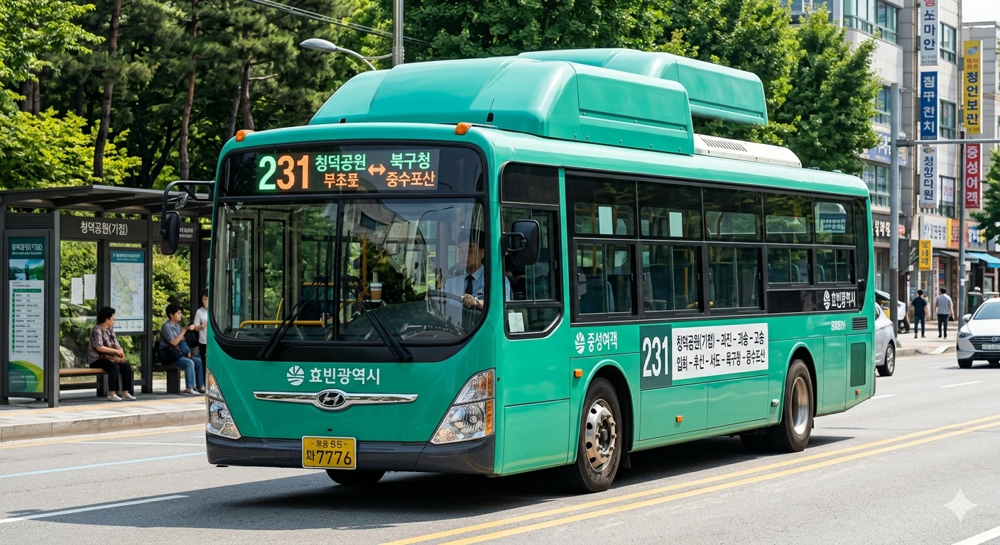

| 기점 | 청덕공원 |
|---|---|
| 종점 | 중수포산 |
| 운수사 | 중성여객 |
| 배차간격 | 평일 18분 / 주말 25분 |
| 연계 철도역 |
효빈 버스 231은 효빈광역시의 지선버스 노선이다.
 |
| 스타더스트 작전 Jade Green (#37B484) 도색 차량 |
| 🚌 효빈 버스 231 | |||||
| 기점 | 청덕공원 | 종점 | 중수포산 | ||
| 종점행 | 첫차 | 05:34 | 기점행 | 첫차 | 05:43 |
| 막차 | 23:17 | 막차 | 23:27 | ||
| 배차간격 | 평일 18분 / 주말 25분 | ||||
| 운수사명 | 중성여객 | 인가대수 | 20대 | ||
| 노선 | |||||
※ 효빈광역시의 자비 없는 도로 교통 상황과 기사님의 풀악셀에 따라 조기 출발 및 지연이 밥 먹듯이 발생하므로 최소 5분 전 대기는 상식이다.